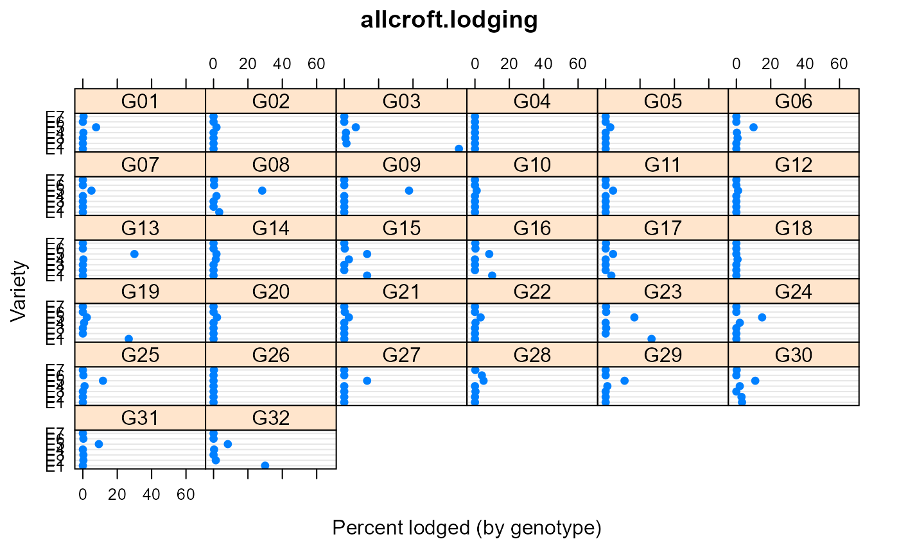

allcroft.lodging.RdPercent lodging is given for 32 genotypes at 7 environments.
A data frame with 224 observations on the following 3 variables.
envenvironment, 1-7
gengenotype, 1-32
ypercent lodged
This data is for the first year of a three-year study.
D. J. Allcroft and C. A. Glasbey, 2003. Analysis of crop lodging using a latent variable model. Journal of Agricultural Science, 140, 383--393. http://doi.org/10.1017/S0021859603003332
Used with permission of Chris Glasbey.
library(agridat) data(allcroft.lodging) dat <- allcroft.lodging # Transformation dat$sy <- sqrt(dat$y) # Variety 4 has no lodging anywhere, so add a small amount dat[dat$env=='E5' & dat$gen=='G04',]$sy <- .01 libs(lattice) dotplot(env~y|gen, dat, as.table=TRUE, xlab="Percent lodged (by genotype)", ylab="Variety", main="allcroft.lodging")#>#>#>#>#> #>#> #> #>#>#>m3 <- tobit(sy ~ 1 + gen + env, left=0, right=100, data=dat) # Table 2 trial/variety means preds <- expand.grid(gen=levels(dat$gen), env=levels(dat$env)) preds$pred <- predict(m3, newdata=preds) round(tapply(preds$pred, preds$gen, mean),2)#> G01 G02 G03 G04 G05 G06 G07 G08 G09 G10 G11 G12 G13 #> -0.52 -2.77 1.68 -3.63 -2.57 -0.32 -2.27 0.94 -0.82 -2.95 -2.35 -2.95 -0.48 #> G14 G15 G16 G17 G18 G19 G20 G21 G22 G23 G24 G25 G26 #> -1.45 0.72 0.35 -0.48 -2.29 0.08 -2.70 -1.31 -1.47 1.23 -0.66 -0.32 -2.08 #> G27 G28 G29 G30 G31 G32 #> -1.66 0.19 -0.92 0.86 0.16 0.87#> E1 E2 E3 E4 E5 E6 E7 #> -0.03 -2.48 -2.37 -0.60 2.47 -1.73 -1.79